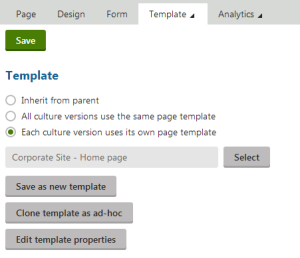

Developing unique page templates for specific languages
When creating a new language version of a page, you usually only edit the original page on the level of page content, i.e. translate the text on the Page or Form tabs of the Pages application. However, you can also make major changes to the basic layout and design of each culture version by using a different page template. By default, pages share the same page template for all of their language versions.
The following steps demonstrate how to assign a unique page template to a specific language version of a page and then modify it as required.
Prerequisite: You first need to set up multiple cultures for the website.
Open the Pages application (the example uses the sample Corporate site).
Select the Home page in the content tree and make sure you are in Edit mode.
Switch to the Properties -> Template tab.
Choose the Each culture version uses its own page template option for the page.
Click Save.

Configuring a page to use a separate page template for each culture
This setting is shared between all versions of the page, so it is not important which language is currently selected.
Create the Home page in the chosen language, for example French:
Switch to the French language using the selector below the content tree.
Select Copy content from another language and English - United States.
Click Create page.
The system creates the page and switches you back to the Template tab, but this time for the French language version of the page.
Now you can create a page template for the specific language:
Click Clone template as ad‑hoc.
This creates a separate copy of the current Home page template and assigns it to the French version of the page.
You can now change the design of the French page without affecting the other language versions.
Cloning the template used by the default culture version provides a convenient starting point from which you can quickly make modifications, but it is also possible to select a completely different template if necessary.
Switch to the page's Design tab.
Add an Editable text web part into the Actions zone.
Switch to the Page tab. Notice there is an additional editable region.
Cut the header text from the bottom region and paste it into the new empty region.
Click Save to confirm the change.
You can now sign out and view the Home page in the French language. The header text is now aligned on the left and placed above the remaining content.

If you switch to English, the page is unchanged, because it still uses the original template.
This is only a simple example of a modification that can be done when the language version has a separate page template. There are many other possibilities, such as setting different properties for web parts or editing the overall layout of the page.